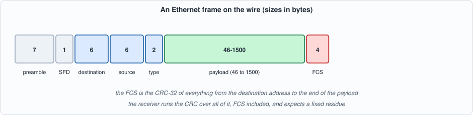
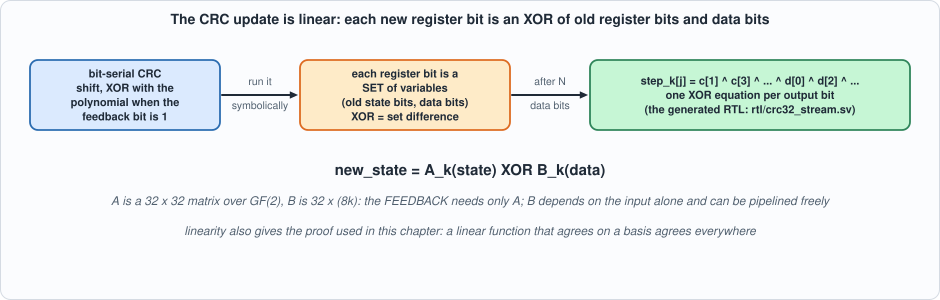
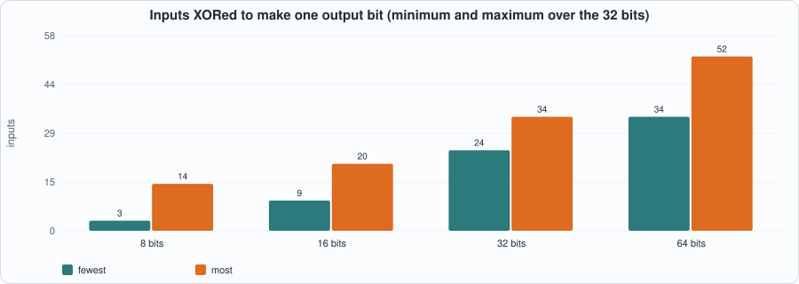
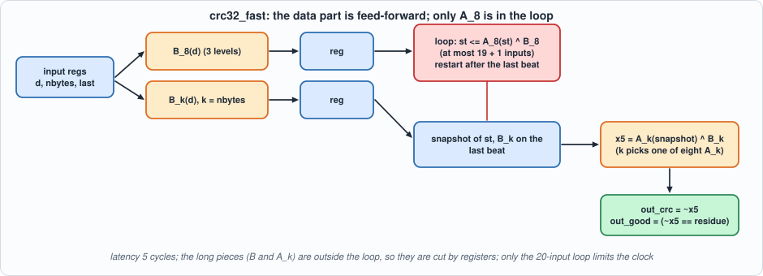
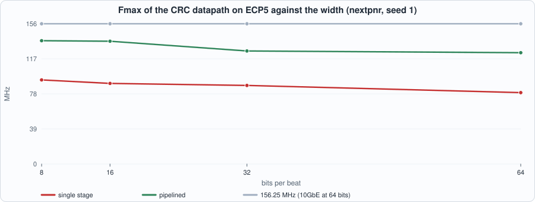

7. Frames and the CRC: Ethernet Frame Check, Parallel CRC-32 at 64 Bits per Beat¶
About the kestrels in this picture
- Mauritius kestrel (Falco punctatus) lives only on the island of Mauritius. By the mid-1970s only a handful of wild birds were known (the figure usually quoted is four); captive breeding and release programmes brought the population back to hundreds.
- American kestrel (Falco sparverius) is the smallest falcon in North America and is found from Alaska to South America. The sexes differ in plumage: males have blue-grey wings, females are barred rufous. It hunts insects and small vertebrates from perches and by hovering.
The scene is imaginary and the birds are stylised drawings.
What you will see: the Ethernet frame and the checksum that ends it; the CRC-32 computed three independent ways in software; a generator that derives the parallel XOR equations from the bit-serial definition by running it symbolically, and writes the RTL; two hardware designs (one stage, and a five-stage pipelined one) at 8, 16, 32 and 64 bits per beat, checked against zlib.crc32 on frames of every length; a proof that the 64-bit update equals eight 1-byte updates for all 2^96 inputs, by linearity; what the code does and does not detect, by experiment; and the measured speed, which shows why how an XOR is written changes the clock by a factor of two.
What you need to know first: Chapters 1 to 6. No networking beyond "a frame is a sequence of bytes" is assumed.
What this chapter builds: tools/crc_gen.py (the generator) and its output rtl/crc32_stream.sv (crc32_comb, crc32_stream, crc32_fast), model/crc_gold.py (bit-serial, table-driven and zlib CRCs; frame and stimulus generators), tb/crc_tb.sv, tb/crc_linear_tb.sv, formal/crc_lin_chk.sv, and tools/ch07_example_a.py, tools/ch07_example_b.py, tools/ch07_run.py, tools/mut_ch07.py.
The Ethernet frame¶

Figure 7.1: a frame on the wire.A frame is a preamble (seven bytes of 0x55) and a start-of-frame delimiter (0xD5) that let the receiver find the bit boundaries; a destination and a source address of six bytes each; a two-byte type (or length); a payload of 46 to 1,500 bytes; and a four-byte frame check sequence (FCS). The FCS is the CRC-32 of the bytes from the destination address to the end of the payload. This chapter is about the FCS: computing it, checking it, and doing so at the rate a link delivers bytes. (The preamble and SFD belong to the physical interface and are not covered by the CRC; the MAC datapath of Chapter 8 handles them.)
The CRC-32¶
A CRC treats the message as a polynomial over the two-element field (bits, with addition = XOR) and takes the remainder of dividing it by a fixed generator polynomial. Ethernet uses
x^32 + x^26 + x^23 + x^22 + x^16 + x^12 + x^11 + x^10 + x^8 + x^7 + x^5 + x^4 + x^2 + x + 1 (0x04C11DB7).
The version used on the wire has four conventions that every implementation must get right: bits are sent least significant first, so the working form is the reflected polynomial 0xEDB88320; the register starts at all ones; the result is inverted; and it is sent least-significant byte first. The bit-serial algorithm is five lines:
def crc_bitwise(data, init=0xFFFFFFFF, final=True):
c = init
for byte in data:
for i in range(8):
fb = (c ^ (byte >> i)) & 1; c >>= 1
if fb: c ^= 0xEDB88320
return c ^ 0xFFFFFFFF if final else c
One property makes receiving easy: a frame followed by its own FCS (low byte first) always leaves the same value, the residue: zlib.crc32(frame + fcs) == 0x2144DF1C. A receiver does not compare the CRC with the FCS field; it runs the CRC over everything, FCS included, and checks for the residue.
model/crc_gold.py holds three implementations of the same function: the bit-serial one above (written from the definition), a table-driven one, and zlib.crc32, a library written by nobody involved here. They agree on 20,000 of 20,000 random messages of 0 to 2,000 bytes, and zlib.crc32(b"123456789") is 0xCBF43926, the standard check value for this CRC.
#!/usr/bin/env python3
"""Chapter 7: independent models of the Ethernet CRC-32 and the frame stream. Three implementations of the same function that must agree: a bit-serial reference written from the definition, zlib.crc32 (a library nobody here wrote), and a table-driven version.
Ethernet CRC-32: polynomial x^32 + x^26 + x^23 + x^22 + x^16 + x^12 + x^11 + x^10 + x^8 + x^7 + x^5 + x^4 + x^2 + x + 1 (0x04C11DB7), bits sent least-significant first (so the working form is the reflected polynomial 0xEDB88320), register initialised to all ones, result inverted, sent least-significant byte first. A frame followed by its own FCS leaves a fixed value (the 'residue'): zlib.crc32(frame + fcs_little_endian) == 0x2144DF1C."""
import random, zlib
POLY_R = 0xEDB88320; RESIDUE = 0x2144DF1C
def crc_bitwise(data, init=0xFFFFFFFF, final=True):
c = init
for byte in data:
for i in range(8):
fb = (c ^ (byte >> i)) & 1; c >>= 1
if fb: c ^= POLY_R
return c ^ 0xFFFFFFFF if final else c
_T = []
for n in range(256):
c = n
for _ in range(8): c = (c >> 1) ^ POLY_R if c & 1 else c >> 1
_T.append(c)
def crc_table(data):
c = 0xFFFFFFFF
for b in data: c = _T[(c ^ b) & 0xFF] ^ (c >> 8)
return c ^ 0xFFFFFFFF
def fcs(frame): return zlib.crc32(frame).to_bytes(4, "little")
def with_fcs(frame): return frame + fcs(frame)
def beats(data, w):
"""Splits bytes into beats of w//8 bytes (byte 0 in bits 7:0). Returns [(value, nbytes, last)]."""
k = w // 8; out = []
for i in range(0, len(data), k):
chunk = data[i:i + k]; out.append((int.from_bytes(chunk, "little"), len(chunk), int(i + k >= len(data))))
return out
def make_frames(seed, n, lo=5, hi=200, bad_fraction=0.3):
"""n byte strings WITH an FCS appended; a fraction have a corrupted FCS (one bit flipped). Returns [(bytes, good)]."""
rng = random.Random(seed); out = []
for _ in range(n):
body = bytes(rng.getrandbits(8) for _ in range(rng.randint(lo, hi))); f = with_fcs(body); good = True
if rng.random() < bad_fraction:
k = rng.randrange(len(f)); f = f[:k] + bytes([f[k] ^ (1 << rng.randrange(8))]) + f[k + 1:]; good = False
out.append((f, good))
return out
def schedule(frames, w, seed):
"""Per-cycle input list (valid, data, nbytes, last), gaps of 0..3 idle cycles between beats and frames. IDLE cycles carry random junk on data, nbytes and last: the interface says they are don't-cares when valid = 0, and a design that reads them is wrong."""
rng = random.Random(seed ^ 0x5bd1)
def idle(): return (0, rng.getrandbits(w), rng.randint(0, 8), rng.getrandbits(1))
ins = [idle() for _ in range(3)]
for f, _ in frames:
for v, nb, last in beats(f, w):
while rng.random() < 0.15: ins.append(idle())
ins.append((1, v, nb, last))
ins += [idle() for _ in range(rng.randint(0, 3))]
return ins + [idle() for _ in range(6)]
def expected(ins, w, latency=1):
"""Per cycle (out_valid, out_good, out_crc) as seen BEFORE the clock edge: the result of a frame appears `latency` cycles after the cycle of its last beat (1 for the single-stage design, 4 for the pipelined one). The CRC is zlib's, computed over all the bytes of the frame (FCS included): out_crc == 0x2144DF1C exactly when the frame is good."""
res = [(0, 0, 0)] * (len(ins) + latency + 1); cur = bytearray()
for k, (v, d, nb, last) in enumerate(ins):
if v:
cur += d.to_bytes(w // 8, "little")[:nb]
if last: c = zlib.crc32(bytes(cur)); res[k + latency] = (1, int(c == RESIDUE), c); cur = bytearray()
return res[:len(ins)]
def write_vectors(path, ins, res, w):
"""One line per cycle: valid last nbytes(hex digit) data (w/4 hex digits) | out_valid out_good out_crc(8 hex)."""
with open(path, "w") as f:
for (v, d, nb, last), (ov, og, oc) in zip(ins, res): f.write(f"{v}{last}{nb:x}{d:0{w // 4}x}{ov}{og}{oc:08x}\n")
if __name__ == "__main__":
rng = random.Random(1); ok = 0
for _ in range(2000):
d = bytes(rng.getrandbits(8) for _ in range(rng.randint(0, 300))); ok += crc_bitwise(d) == zlib.crc32(d) == crc_table(d)
print("bitwise = zlib = table on 2000 random messages:", ok, "of 2000; residue check:", zlib.crc32(with_fcs(b"hello world")) == RESIDUE)
def frames_all_lengths(lo, hi, seed=1):
"""One good and one bad frame (with FCS) for every body length lo..hi: every length modulo the beat width, so every partial-last-beat case is exercised at every width."""
rng = random.Random(seed); out = []
for n in range(lo, hi + 1):
body = bytes(rng.getrandbits(8) for _ in range(n)); f = with_fcs(body); out.append((f, True))
k = rng.randrange(len(f)); out.append((f[:k] + bytes([f[k] ^ (1 << rng.randrange(8))]) + f[k + 1:], False))
return out
From one bit per step to 64: the XOR equations¶
Hardware that handles one bit per clock (a shift register with a few XORs) would be far too slow: a 10 Gbit/s link delivers 64 bits per beat at 156.25 MHz. The way to take N bits at once is that the register update is linear over GF(2): after N data bits, every bit of the new register is the XOR of some bits of the old register and some bits of the data. Which ones can be found by running the bit-serial algorithm symbolically: hold each register bit as a set of variables, and apply the shift and the conditional XOR to the sets (XOR of two bits is the symmetric difference of their sets).

Figure 7.2: the same algorithm, run on sets of variables, writes the parallel equations.tools/crc_gen.py does this and writes the RTL: new_state = A_k(state) XOR B_k(data) for k = 1..8 bytes per beat (A is a 32 x 32 matrix over GF(2), B is 32 x 8k). The result for one 64-bit beat has between 34 and 52 inputs per output bit:

Figure 7.3: the equations grow with the width (derived by the generator).#!/usr/bin/env python3
"""Chapter 7: generates rtl/crc32_stream.sv. The CRC-32 register update is LINEAR over GF(2): after consuming N data bits, every bit of the new register is the XOR of some bits of the old register and some of the data. This script finds which, by running the bit-serial algorithm SYMBOLICALLY: each register bit is held as a set of variables (c0..c31 old state, d0..d(8k-1) data) represented as an integer bit mask, and the shift and XOR steps of the definition are applied to the masks. The result for k bytes (k = 1..8) is written out as one XOR expression per output bit.
Usage: crc_gen.py [--matrix] (without arguments, writes rtl/crc32_stream.sv)"""
import os, sys
POLY_R = 0xEDB88320; NVAR_STATE = 32
def symbolic_step(k):
"""Returns 32 masks: bit j of the register after k bytes = XOR of the variables in masks[j]. Variable v < 32 is old state bit v; variable 32 + i is data bit i (data bit 8*b + t is bit t of byte b; byte 0 first)."""
reg = [1 << j for j in range(32)]
for b in range(k):
for t in range(8):
fb = reg[0] ^ (1 << (32 + 8 * b + t)) # feedback = register bit 0 XOR the data bit
reg = reg[1:] + [0] # shift right by one
for j in range(32):
if POLY_R >> j & 1: reg[j] ^= fb
return reg
def terms(mask): return [("c[%d]" % v) if v < 32 else ("d[%d]" % (v - 32)) for v in range(NVAR_STATE + 64) if mask >> v & 1]
def xor_tree(ts):
"""A balanced tree of 4-input XORs written with explicit parentheses, so that a LUT4 mapper sees ceil(log4 n) levels instead of a chain of n - 1 two-input XORs."""
if len(ts) <= 4: return " ^ ".join(ts)
g = -(-len(ts) // 4); size = max(4, -(-len(ts) // 4)); parts = [ts[i:i + size] for i in range(0, len(ts), size)]
return " ^ ".join("(" + xor_tree(p) + ")" if len(p) > 1 else p[0] for p in parts)
def row_weights(k): return [bin(m).count("1") for m in symbolic_step(k)]
def emit():
o = ["// GENERATED by tools/crc_gen.py -- do not edit. Ethernet CRC-32 (reflected polynomial 0xEDB88320), streaming, W bits per beat (W = 8, 32 or 64).",
"// crc32_comb: the combinational update. stepK consumes the K low bytes of d (byte 0 in d[7:0]) starting from register state c; the XOR equations come from running the bit-serial algorithm symbolically (see crc_gen.py). k selects the number of valid bytes (1..8; 0 or more than 8 leaves the state unchanged).",
"// verilator lint_off DECLFILENAME", "// verilator lint_off UNUSEDSIGNAL",
"module crc32_comb (input logic [31:0] c, input logic [63:0] d, input logic [3:0] k, output logic [31:0] n);"]
for k in range(1, 9):
o.append(f" function logic [31:0] step{k}(input logic [31:0] cc, input logic [63:0] dd);")
o.append(" begin")
for j, m in enumerate(symbolic_step(k)): o.append(f" step{k}[{j}] = " + (xor_tree([t.replace("c[", "cc[").replace("d[", "dd[") for t in terms(m)]) if m else "1'b0") + ";")
o.append(" end"); o.append(" endfunction")
o += [" always_comb begin", " case (k)", " 4'd1: n = step1(c, d);"] + [f" 4'd{k}: n = step{k}(c, d);" for k in range(2, 9)] + [" default: n = c;", " endcase", " end", "endmodule",
"// crc32_stream: the frame wrapper. The register starts at all ones; on the last beat of a frame the output is the inverted register (= zlib.crc32 of the frame bytes) one cycle later, and out_good is 1 when it equals the residue 0x2144DF1C (the frame included a correct FCS).",
"module crc32_stream #(parameter int W = 64) (",
" input logic clk, input logic rst, input logic in_valid, input logic [W-1:0] in_data, input logic [3:0] in_nbytes, input logic in_last,",
" output logic out_valid, output logic out_good, output logic [31:0] out_crc);",
" logic [31:0] st, nx; logic [63:0] d64;",
" assign d64 = 64'(in_data);",
" crc32_comb u (.c(st), .d(d64), .k(in_nbytes), .n(nx));",
" always_ff @(posedge clk) begin",
" if (rst) begin st <= 32'hFFFFFFFF; out_valid <= 1'b0; out_good <= 1'b0; out_crc <= 32'd0; end",
" else begin",
" out_valid <= in_valid && in_last;",
" if (in_valid) begin",
" if (in_last) begin st <= 32'hFFFFFFFF; out_crc <= ~nx; out_good <= (~nx == 32'h2144DF1C); end",
" else st <= nx;",
" end",
" end", " end", "endmodule",
"// crc32_fast: the same function, pipelined for speed (latency 5 instead of 1). The update is LINEAR: new_state = A_k(state) XOR B_k(data). The data part B_k is feed-forward and is computed in its own stages; the feedback loop through the state register is only A_8 (at most 19 inputs per bit) XOR one precomputed word; the partial last beat, which needs A_k for a smaller k, is taken OUT of the loop (the state is captured and the last step is done in a final stage, after which the state restarts).",
"// Stages: (1) input registers; (2) B_8(d) for full beats and B_k(d) for the last beat, registered; (3) the loop: st <= A_8(st) ^ B_8 for a full beat, snapshot of st and B_k on the last beat, st restarts; (4) x5 = A_k(snapshot) ^ B_k; (5) out_crc = ~x5 and the comparison with the residue.",
"module crc32_fast #(parameter int W = 64) (",
" input logic clk, input logic rst, input logic in_valid, input logic [W-1:0] in_data, input logic [3:0] in_nbytes, input logic in_last,",
" output logic out_valid, output logic out_good, output logic [31:0] out_crc);",
" localparam logic [3:0] FULL = 4'(W / 8);",
" logic [63:0] d1; logic [3:0] nb1; logic last1, v1; // stage 1",
" logic [31:0] pf, pl_n, pf_n; logic [31:0] pl2, pf2; logic [3:0] nb2; logic last2, v2; // stage 2",
" logic [31:0] st, a_loop, ak, st_s, pl_s, x5; logic [3:0] nb_s; logic last_s, v_s, v5;",
" crc32_comb ub_full (.c(32'd0), .d(d1), .k(FULL), .n(pf_n)); // B for a full beat (c = 0 leaves only the data part)",
" crc32_comb ub_last (.c(32'd0), .d(d1), .k(nb1), .n(pl_n)); // B for the number of bytes in this beat",
" crc32_comb ua_loop (.c(st), .d(64'd0), .k(FULL), .n(a_loop)); // A for a full beat (d = 0 leaves only the state part)",
" crc32_comb ua_last (.c(st_s), .d(64'd0), .k(nb_s), .n(ak));",
" always_ff @(posedge clk) begin",
" if (rst) begin v1 <= 1'b0; v2 <= 1'b0; v_s <= 1'b0; v5 <= 1'b0; st <= 32'hFFFFFFFF; out_valid <= 1'b0; out_good <= 1'b0; out_crc <= 32'd0; end",
" else begin",
" d1 <= 64'(in_data); nb1 <= in_nbytes; last1 <= in_last; v1 <= in_valid;",
" pf2 <= pf_n; pl2 <= pl_n; nb2 <= nb1; last2 <= last1; v2 <= v1;",
" v_s <= v2 && last2; nb_s <= nb2; pl_s <= pl2; st_s <= st;",
" if (v2) begin if (last2) st <= 32'hFFFFFFFF; else st <= a_loop ^ pf2; end",
" v5 <= v_s; x5 <= ak ^ pl_s;",
" out_valid <= v5; out_crc <= ~x5; out_good <= (~x5 == 32'h2144DF1C);",
" end", " end", "endmodule"]
return "\n".join(o) + "\n"
if __name__ == "__main__":
if "--matrix" in sys.argv:
for k in (1, 4, 8): w = row_weights(k); print(f"{8 * k:3d} bits per beat: XOR inputs per output bit: min {min(w)}, max {max(w)}, total {sum(w)} terms")
else:
root = os.path.dirname(os.path.dirname(os.path.abspath(__file__))); open(os.path.join(root, "rtl", "crc32_stream.sv"), "w").write(emit()); print("wrote rtl/crc32_stream.sv")
A beat may carry fewer than W/8 bytes only on the last beat of a frame (the interface rule), so the generator makes one function per byte count and the design selects by the in_nbytes input. The generated file is in the repository (rtl/crc32_stream.sv, about 330 lines); here is its structure rather than all of it, with the first lines of the 8-byte function:
module crc32_comb (input logic [31:0] c, input logic [63:0] d, input logic [3:0] k, output logic [31:0] n);
function logic [31:0] step8(input logic [31:0] cc, input logic [63:0] dd);
begin
step8[0] = ((cc[1] ^ cc[3] ^ cc[4] ^ cc[6]) ^ (cc[9] ^ cc[10] ^ cc[11] ^ cc[14]) ^ ...
...
always_comb begin case (k) 4'd1: n = step1(c, d); ... 4'd8: n = step8(c, d); default: n = c; endcase end
endmodule
Two designs¶
crc32_stream is the direct one: a 32-bit register st that starts at all ones, updated every valid beat by crc32_comb; on the last beat of a frame the inverted result is registered (out_crc, equal to zlib.crc32 of all the bytes) with out_good = (result == residue), and st restarts. Latency: one cycle.
crc32_fast uses linearity to take the long XORs out of the feedback loop: A_k(state) and B_k(data) can be computed separately. The data part B depends on the input alone and can be pipelined freely; the loop through st is only A_8 XOR one precomputed word; and the partial last beat (which needs A_k for a smaller k) is taken out of the loop: the state is captured and the last step done in a final stage, after which the state restarts. Five stages, latency 5.

Figure 7.4: the pipelined design. Only the 20-input loop limits the clock; everything long is cut by registers.The tests¶
Stimulus and oracle. model/crc_gold.py builds frames (random bytes plus a correct FCS, 30% with one bit of the frame flipped so that the check must fail), splits them into beats of W/8 bytes, and schedules them with random idle cycles between beats and frames; idle cycles carry random junk on in_data, in_nbytes and in_last (the interface says they are don't-cares). The expected output is zlib.crc32 over the frame's bytes and crc == 0x2144DF1C for the good flag, placed at the right cycle for the design's latency: nothing in the oracle comes from the RTL.
// Chapter 7 testbench for crc32_stream: replays out/crc_vec.hex (made by model/crc_gold.py from zlib.crc32, not from the RTL). Each line: valid last nbytes data | out_valid out_good out_crc. Compared every cycle. Defines: W (8, 16, 32, 64), NC (cycles), FAST (0 = crc32_stream, latency 1; 1 = crc32_fast, latency 5: the vector file must have been made with the same latency).
`timescale 1ns/1ps
`ifndef W
`define W 64
`endif
`ifndef FAST
`define FAST 0
`endif
`ifndef NC
`define NC 2000
`endif
module crc_tb;
localparam int W = `W, NC = `NC, DH = W / 4, LW = 4 * (3 + DH + 2 + 8);
logic clk = 0, rst = 1, in_valid = 0, in_last = 0; logic [W-1:0] in_data = '0; logic [3:0] in_nbytes = '0; logic out_valid, out_good; logic [31:0] out_crc;
logic [127:0] vec [0:NC-1]; int errs = 0, k, frames = 0;
if (`FAST) begin : g1 crc32_fast #(.W(W)) dut (.clk(clk), .rst(rst), .in_valid(in_valid), .in_data(in_data), .in_nbytes(in_nbytes), .in_last(in_last), .out_valid(out_valid), .out_good(out_good), .out_crc(out_crc)); end
else begin : g0 crc32_stream #(.W(W)) dut (.clk(clk), .rst(rst), .in_valid(in_valid), .in_data(in_data), .in_nbytes(in_nbytes), .in_last(in_last), .out_valid(out_valid), .out_good(out_good), .out_crc(out_crc)); end
always #5 clk = ~clk;
initial begin
$readmemh("out/crc_vec.hex", vec);
in_valid = 1; in_last = 1; in_nbytes = 4'd1; in_data = '1; // valid input during reset: reset must discard it
repeat (2) @(negedge clk); rst = 0; in_valid = 0; in_last = 0; in_nbytes = '0;
for (k = 0; k < NC; k++) begin
@(negedge clk);
// line layout, from the right: out_crc 8 hex, out_good 1, out_valid 1, data DH hex, nbytes 1, last 1, valid 1
in_valid = vec[k][4*(DH+8+2+2)]; in_last = vec[k][4*(DH+8+2+1)]; in_nbytes = vec[k][4*(DH+8+2) +: 4]; in_data = vec[k][4*(8+2) +: W]; #1;
if (out_valid !== vec[k][4*9] || (vec[k][4*9] && (out_good !== vec[k][4*8] || out_crc !== vec[k][31:0]))) begin
errs++; if (errs < 5) $display("MISMATCH cycle %0d: valid %b/%b good %b/%b crc %h/%h", k, out_valid, vec[k][4*9], out_good, vec[k][4*8], out_crc, vec[k][31:0]);
end
if (out_valid === 1'b1) frames++;
end
if (errs == 0) $display("PASS: W=%0d FAST=%0d, %0d cycles, %0d frames checked against zlib.crc32", W, `FAST, NC, frames); else $display("FAIL: W=%0d FAST=%0d, %0d mismatches", W, `FAST, errs);
$finish;
end
endmodule
The testbench holds a valid input during reset (reset must discard it) and compares every cycle. Two kinds of frame set are used: random frames (three seeds of 60), and every body length from 1 to 80 bytes, one good and one bad frame each: at 64 bits per beat that exercises every possible partial last beat (1 to 8 bytes) many times, at every width.
The proof of the wide step. A formal check that the 8-byte update equals eight 1-byte updates for all register values and all data words has 96 free input bits. I wrote it as a SAT miter for Yosys; it did not finish within 100 seconds even for the two-byte case: SAT solvers are poor at long XOR chains. The proof is by linearity instead. If a function over GF(2) is built only from XOR and NOT gates it is affine; if also f(0) = 0 it is linear, and a linear function that agrees with another on the 96 unit inputs agrees on every input, because f(x ^ y) = f(x) ^ f(y). tb/crc_linear_tb.sv checks the 97 basis inputs; ch07_run.py checks the gate types after Yosys maps the circuits (only XOR and NOT):
// Chapter 7: equivalence of the 64-bit-per-beat update and eight 1-byte updates on a BASIS. Both circuits are built only from XOR and NOT gates (checked in tools/ch07_run.py by counting the gate types Yosys maps them to), hence affine over GF(2); this testbench also checks that the all-zero input gives zero for both, so the constant term is zero and they are linear, and a function equal on the 96 unit inputs and on zero is equal on all 2^96 inputs: f(x ^ y) = f(x) ^ f(y).
`timescale 1ns/1ps
module crc_linear_tb;
logic [31:0] c, wide, s [9]; logic [63:0] d; int errs = 0, i, j;
crc32_comb u_wide (.c(c), .d(d), .k(4'd8), .n(wide));
assign s[0] = c;
for (genvar b = 0; b < 8; b++) begin : bytes
crc32_comb u (.c(s[b]), .d({56'd0, d[8*b +: 8]}), .k(4'd1), .n(s[b + 1]));
end
initial begin
c = 0; d = 0; #1; if (wide !== s[8] || wide !== 32'd0) errs++;
for (i = 0; i < 96; i++) begin
c = 0; d = 0; if (i < 32) c[i] = 1'b1; else d[i - 32] = 1'b1; #1;
if (wide !== s[8]) begin errs++; $display("MISMATCH on basis vector %0d: %h %h", i, wide, s[8]); end
end
if (errs == 0) $display("PASS: the 8-byte update equals eight 1-byte updates on all 97 basis inputs (hence on all 2^96 inputs, the circuits being linear)"); else $display("FAIL: %0d", errs);
$finish;
end
endmodule
#!/usr/bin/env python3
"""Chapter 7: the running designs. (1) the three software CRCs agree; (2) lint; (3) the generated streaming CRC against zlib: random frames at W = 8, 16, 32, 64 in two simulators, and frames of EVERY length from 1 to 80 bytes at every width (all partial-last-beat cases); (4) the 8-byte update against eight 1-byte updates on a basis, and the gate-type check that makes the basis argument valid. Usage: ch07_run.py"""
import os, re, subprocess, sys, zlib, random
sys.path.insert(0, os.path.dirname(os.path.abspath(__file__))); sys.path.insert(0, os.path.join(os.path.dirname(os.path.abspath(__file__)), "..", "model"))
import flow, crc_gold as g
R = flow.ROOT; V = os.path.join(R, "out", "crc_vec.hex")
def first(o): return next((l for l in o.splitlines() if l.startswith(("PASS", "FAIL", "MISM", "COMPILE"))), "no output")
def run_w(w, frames, seed, sims=("icarus",), fast=0):
ins = g.schedule(frames, w, seed); g.write_vectors(V, ins, g.expected(ins, w, 5 if fast else 1), w); out = []
for s in sims:
fn = flow.sim_icarus if s == "icarus" else flow.sim_verilator; out.append(first(fn(["rtl/crc32_stream.sv", "tb/crc_tb.sv"], "crc_tb", defines=(f"W={w}", f"NC={len(ins)}", f"FAST={fast}"))[1]).startswith("PASS"))
return out
if __name__ == "__main__":
print("== 1. three implementations of the CRC-32 in software: bit-serial from the definition, table-driven, and zlib; 20,000 random messages of 0 to 2,000 bytes")
rng = random.Random(1); ok = sum(g.crc_bitwise(d) == g.crc_table(d) == zlib.crc32(d) for d in (bytes(rng.getrandbits(8) for _ in range(rng.randint(0, 2000))) for _ in range(20000)))
print(f" all three agree on {ok} of 20000; residue 0x{g.RESIDUE:08X} reproduced for a frame + FCS: {zlib.crc32(g.with_fcs(b'hello world')) == g.RESIDUE}; the standard check value zlib.crc32(b'123456789') = 0x{zlib.crc32(b'123456789'):08X} (expected 0xCBF43926)")
print("\n== 2. lint gate")
for top in ("crc32_comb", "crc32_stream", "crc32_fast"):
p = subprocess.run(["verilator", "--lint-only", "-Wall", "--top-module", top, "rtl/crc32_stream.sv"], cwd=R, capture_output=True, text=True); w = [l for l in (p.stdout + p.stderr).splitlines() if l.startswith("%Warning")]
y = subprocess.run(["yosys", "-p", f"read_verilog -sv rtl/crc32_stream.sv; hierarchy -top {top}; proc; opt_clean; check"], cwd=R, capture_output=True, text=True).stdout
print(f" {top:13s} Verilator warnings: {len(w)} Yosys check problems: {len([l for l in y.splitlines() if 'Found and reported' in l and ' 0 problems' not in l])}")
print("\n== 3. both designs against zlib.crc32 (crc32_stream: result 1 cycle after the last beat; crc32_fast: 5 cycles; each frame is checked for the CRC of all its bytes and for the good/bad flag)")
print(f" {'design':13s} {'W':>3s} {'random frames, 3 seeds x 60':>28s} {'Icarus':>7s} {'Verilator':>10s} | {'every length 1-80 bytes, good+bad':>34s} {'Icarus':>7s}")
for fast, name in ((0, "crc32_stream"), (1, "crc32_fast")):
for w in (8, 16, 32, 64):
r = [run_w(w, g.make_frames(sd, 60), sd, ("icarus", "verilator"), fast) for sd in (1, 2, 3)]
a = run_w(w, g.frames_all_lengths(1, 80), 9, ("icarus",), fast)[0]
print(f" {name:13s} {w:3d} {'':>28s} {('PASS' if all(x[0] for x in r) else 'FAIL'):>7s} {('PASS' if all(x[1] for x in r) else 'FAIL'):>10s} | {'':>34s} {('PASS' if a else 'FAIL'):>7s}")
print("\n== 4. the 64-bit update against eight 1-byte updates: all 97 basis inputs (Icarus), and the gate types of the generated XOR networks")
print(" " + first(flow.sim_icarus(["rtl/crc32_stream.sv", "tb/crc_linear_tb.sv"], "crc_linear_tb")[1]))
for K in (1, 4, 8):
y = subprocess.run(["yosys", "-p", f"read_verilog -sv rtl/crc32_stream.sv formal/crc_lin_chk.sv; chparam -set K {K} crc_lin_chk; hierarchy -top crc_lin_chk; synth -top crc_lin_chk -flatten; abc -g XOR,AND,OR,MUX; stat"], cwd=R, capture_output=True, text=True).stdout
cells = dict(re.findall(r"^\s+(\$_\w+_)\s+(\d+)", y.rsplit("Number of cells", 1)[-1], re.M)); print(f" step{K} ({8 * K} bits): gates after mapping: {cells} only XOR and NOT gates (so affine): {set(cells) <= {'$_XOR_', '$_NOT_'}}")
print(" XOR and NOT gates make an AFFINE function (linear plus a constant); the basis test also checks that the all-zero input gives zero for both circuits, so the constant is zero and the functions are linear, which is what the basis argument needs")
print(" a SAT miter of the 64-bit and the eight 1-byte updates (96 free input bits) did not finish within 100 seconds even for the 2-byte case: CDCL solvers are poor at long XOR chains, so the proof above is by linearity instead")
To compile and run: python3 tools/ch07_run.py (a few minutes, mostly Verilator). Recorded output:
== 1. three implementations of the CRC-32 in software: bit-serial from the definition, table-driven, and zlib; 20,000 random messages of 0 to 2,000 bytes
all three agree on 20000 of 20000; residue 0x2144DF1C reproduced for a frame + FCS: True; the standard check value zlib.crc32(b'123456789') = 0xCBF43926 (expected 0xCBF43926)
== 2. lint gate
crc32_comb Verilator warnings: 0 Yosys check problems: 0
crc32_stream Verilator warnings: 0 Yosys check problems: 0
crc32_fast Verilator warnings: 0 Yosys check problems: 0
== 3. both designs against zlib.crc32 (crc32_stream: result 1 cycle after the last beat; crc32_fast: 5 cycles; each frame is checked for the CRC of all its bytes and for the good/bad flag)
design W random frames, 3 seeds x 60 Icarus Verilator | every length 1-80 bytes, good+bad Icarus
crc32_stream 8 PASS PASS | PASS
crc32_stream 16 PASS PASS | PASS
crc32_stream 32 PASS PASS | PASS
crc32_stream 64 PASS PASS | PASS
crc32_fast 8 PASS PASS | PASS
crc32_fast 16 PASS PASS | PASS
crc32_fast 32 PASS PASS | PASS
crc32_fast 64 PASS PASS | PASS
== 4. the 64-bit update against eight 1-byte updates: all 97 basis inputs (Icarus), and the gate types of the generated XOR networks
PASS: the 8-byte update equals eight 1-byte updates on all 97 basis inputs (hence on all 2^96 inputs, the circuits being linear)
step1 (8 bits): gates after mapping: {'$_NOT_': '3', '$_XOR_': '153'} only XOR and NOT gates (so affine): True
step4 (32 bits): gates after mapping: {'$_XOR_': '628'} only XOR and NOT gates (so affine): True
step8 (64 bits): gates after mapping: {'$_NOT_': '7', '$_XOR_': '986'} only XOR and NOT gates (so affine): True
XOR and NOT gates make an AFFINE function (linear plus a constant); the basis test also checks that the all-zero input gives zero for both circuits, so the constant is zero and the functions are linear, which is what the basis argument needs
a SAT miter of the 64-bit and the eight 1-byte updates (96 free input bits) did not finish within 100 seconds even for the 2-byte case: CDCL solvers are poor at long XOR chains, so the proof above is by linearity instead
Reading the output. Section 1: the three software CRCs agree. Section 2: all three modules are lint-clean. Section 3: both designs match zlib at every width (8, 16, 32, 64) on random frames in both simulators and on frames of every length from 1 to 80 bytes in Icarus. Section 4: the 8-byte update equals eight 1-byte updates on all 97 basis inputs, and the XOR networks contain only XOR and NOT gates, which makes the equality hold for all 2^96 inputs; the SAT attempt is recorded as not finishing.
Running example A: what the width costs, and how an XOR is written¶
#!/usr/bin/env python3
"""Chapter 7, example A: what the width of the datapath costs. For W = 8, 16, 32, 64 bits per beat: the XOR-equation statistics from the generator (derived), the LUT4/flip-flop count and Fmax from Yosys and nextpnr on iCE40 and ECP5 (measured), the throughput W x Fmax (derived), and how many beats a 64-byte and a 1,518-byte frame take. Usage: ch07_example_a.py"""
import os, sys, concurrent.futures as cf, math
sys.path.insert(0, os.path.dirname(os.path.abspath(__file__))); import flow, crc_gen
WS = (8, 16, 32, 64)
def job(a):
top, W, fam = a; r = flow.run(["rtl/crc32_stream.sv"], top, fam, 400, tag=f"{top}_{W}_{fam}", params={"W": W}); return a, r
if __name__ == "__main__":
with cf.ThreadPoolExecutor(4) as ex: res = dict(ex.map(job, [(t, W, f) for t in ("crc32_stream", "crc32_fast") for W in WS for f in ("ice40", "ecp5")]))
print("== 1. the XOR equations (derived by crc_gen.py): inputs XORed to make each of the 32 output bits, for a full beat")
print(f" {'W':>3s} {'min inputs':>10s} {'max inputs':>10s} {'total terms':>11s} {'XOR depth with 4-input LUTs':>28s}")
for W in WS:
w = crc_gen.row_weights(W // 8); print(f" {W:3d} {min(w):10d} {max(w):10d} {sum(w):11d} {math.ceil(math.log(max(w), 4)):28d}")
print(" (an n-input XOR needs ceil(log4 n) levels of 4-input LUTs; the generated function for a partial last beat shares the same registers, so the real depth also includes the byte-count multiplexer)")
for top, title in (("crc32_stream", "2. measured: the single-stage design crc32_stream (latency 1; one register loop through the whole update and the byte-count multiplexer)"), ("crc32_fast", "3. measured: the pipelined design crc32_fast (latency 5; the loop through the state register is only A8 XOR one precomputed word)")):
print(f"\n== {title}; nextpnr seed 1, asked for 400 MHz")
print(f" {'W':>3s} | {'iCE40 LUT':>9s} {'FF':>4s} {'Fmax MHz':>9s} {'Gbit/s':>7s} | {'ECP5 LUT':>8s} {'FF':>4s} {'Fmax MHz':>9s} {'Gbit/s':>7s}")
for W in WS:
i, e = res[(top, W, "ice40")], res[(top, W, "ecp5")]
print(f" {W:3d} | {i['luts']:9d} {i['ffs']:4d} {i['fmax']:9.1f} {W * i['fmax'] / 1000:7.1f} | {e['luts']:8d} {e['ffs']:4d} {e['fmax']:9.1f} {W * e['fmax'] / 1000:7.1f}")
print(" Gbit/s = W x Fmax: the line rate the datapath could sustain if every clock carried a full beat (derived from nextpnr's estimate)")
print("\n== 4. what a 10 Gigabit Ethernet link needs: 10 Gbit/s / W bits per beat = the clock (derived) and the beats per frame")
print(f" {'W':>3s} {'clock for 10 Gbit/s':>20s} {'beats, 64-byte frame':>21s} {'beats, 1518-byte frame':>23s}")
for W in WS: print(f" {W:3d} {10000 / W:17.2f} MHz {math.ceil(64 / (W // 8)):21d} {math.ceil(1518 / (W // 8)):23d}")
print(" the standard 10GbE datapath is 64 bits at 156.25 MHz")
To compile and run: python3 tools/ch07_example_a.py (several minutes: 16 builds on two targets). Recorded output:
== 1. the XOR equations (derived by crc_gen.py): inputs XORed to make each of the 32 output bits, for a full beat
W min inputs max inputs total terms XOR depth with 4-input LUTs
8 3 14 252 2
16 9 20 446 3
32 24 34 904 3
64 34 52 1422 3
(an n-input XOR needs ceil(log4 n) levels of 4-input LUTs; the generated function for a partial last beat shares the same registers, so the real depth also includes the byte-count multiplexer)
== 2. measured: the single-stage design crc32_stream (latency 1; one register loop through the whole update and the byte-count multiplexer); nextpnr seed 1, asked for 400 MHz
W | iCE40 LUT FF Fmax MHz Gbit/s | ECP5 LUT FF Fmax MHz Gbit/s
8 | 1254 34 83.3 0.7 | 1941 66 93.7 0.7
16 | 1486 34 79.0 1.3 | 2213 66 89.8 1.4
32 | 1888 34 75.8 2.4 | 2676 66 87.5 2.8
64 | 2261 34 77.6 5.0 | 3426 66 79.5 5.1
Gbit/s = W x Fmax: the line rate the datapath could sustain if every clock carried a full beat (derived from nextpnr's estimate)
== 3. measured: the pipelined design crc32_fast (latency 5; the loop through the state register is only A8 XOR one precomputed word); nextpnr seed 1, asked for 400 MHz
W | iCE40 LUT FF Fmax MHz Gbit/s | ECP5 LUT FF Fmax MHz Gbit/s
8 | 1374 218 124.1 1.0 | 1779 250 137.4 1.1
16 | 1656 228 121.3 1.9 | 2089 260 136.8 2.2
32 | 2089 244 113.5 3.6 | 2665 276 125.9 4.0
64 | 2466 276 110.3 7.1 | 3214 308 124.0 7.9
Gbit/s = W x Fmax: the line rate the datapath could sustain if every clock carried a full beat (derived from nextpnr's estimate)
== 4. what a 10 Gigabit Ethernet link needs: 10 Gbit/s / W bits per beat = the clock (derived) and the beats per frame
W clock for 10 Gbit/s beats, 64-byte frame beats, 1518-byte frame
8 1250.00 MHz 64 1518
16 625.00 MHz 32 759
32 312.50 MHz 16 380
64 156.25 MHz 8 190
the standard 10GbE datapath is 64 bits at 156.25 MHz

Figure 7.5: the clock of each design against the width, with the 10GbE requirement.Reading the output (derived for Section 1; measured by Yosys and nextpnr, seed 1, for Sections 2 and 3).
- The equations grow with the width: at most 14 XOR inputs per bit at 8 bits per beat, 20 at 16, 34 at 32 and 52 at 64. With 4-input LUTs an n-input XOR needs
ceil(log4 n)levels: 2 levels at 8 bits, 3 at 16, 32 and 64 (derived). - The single-stage design reaches 77.6 MHz on iCE40 and 79.5 MHz on ECP5 at 64 bits, i.e. 5.0 and 5.1 Gbit/s (W x Fmax); the pipelined one reaches 110.3 and 124.0 MHz, 7.1 and 7.9 Gbit/s. Neither reaches the 156.25 MHz that 10 Gigabit Ethernet needs at 64 bits. On ECP5 the pipelined design carries 7.9 Gbit/s, about 80% of 10 Gbit/s; closing the gap needs one more cut (the critical path is now the eight-way choice of
A_kin the last stage, Exercise 1). - Pipelining helps, but less than the depth suggests: 1.4 to 1.6 times the clock at 64 bits (110.3 against 77.6 MHz on iCE40; 124.0 against 79.5 MHz on ECP5), at the cost of about 240 flip-flops and 4 more cycles of latency.
- Area: 2,261 LUTs (single stage, 64 bits, iCE40) and 2,466 (pipelined); the register count of the single stage is 34, of the pipelined 276.
An observation about the tool, with numbers. My first version of the generator wrote each output bit as a flat chain a ^ b ^ c ^ .... The tools did not rebalance it: Yosys/ABC mapped the 34-input XOR of the data part as a chain, and the critical path of the pipelined 64-bit design was 11 LUT levels in a path that only needs 3 (B_8's 34 inputs). The measured clocks of that first version were 39.3 MHz (single stage) and 67.9 MHz (pipelined) on iCE40, and 44.4 and 77.3 MHz on ECP5. Writing each XOR as an explicit tree of 4-input groups in the generator (xor_tree) took the same designs to 77.6 and 110.3 MHz on iCE40, 79.5 and 124.0 MHz on ECP5: about twice the clock for the single stage and 1.6 times for the pipelined one, from changing parentheses. (Those first-version figures were measured while building this chapter, on the same designs before the change; the table above is the final version.)
Running example B: what the CRC detects¶
#!/usr/bin/env python3
"""Chapter 7, example B: what the CRC detects, by experiment. Every error pattern is applied to a real frame (with a correct FCS) and the frame is checked the way the receiver does (zlib.crc32 of frame + FCS == 0x2144DF1C). (1) every single-bit error, every double-bit error (exhaustive on a 64-byte frame, sampled on a 1,518-byte frame), every three-bit error on a 16-byte frame; (2) burst errors of every length up to 40 bits; (3) random corruption, with the full 32-bit check and with only its low 16 bits (to measure the 2^-n miss rate that 32 bits makes too small to see). Usage: ch07_example_b.py"""
import os, random, sys, zlib, itertools, time
sys.path.insert(0, os.path.join(os.path.dirname(os.path.abspath(__file__)), "..", "model"))
import crc_gold as g
def mk(n, seed): rng = random.Random(seed); return g.with_fcs(bytes(rng.getrandbits(8) for _ in range(n)))
def flipped(f, bits):
b = bytearray(f)
for k in bits: b[k >> 3] ^= 1 << (k & 7)
return bytes(b)
def undetected(f, bits): return zlib.crc32(flipped(f, bits)) == g.RESIDUE
if __name__ == "__main__":
t0 = time.time()
print("== 1. few-bit errors in a frame with a correct FCS (a frame is 'detected' when its CRC no longer equals the residue)")
print(f" {'case':52s} {'patterns tried':>15s} {'undetected':>11s}")
for n in (60, 508, 1514):
f = mk(n, n); nb = len(f) * 8; bad = sum(undetected(f, (k,)) for k in range(nb)); print(f" {'every single-bit error, frame of %d bytes + FCS' % n:52s} {nb:15d} {bad:11d}")
f = mk(60, 1); nb = len(f) * 8; bad = sum(undetected(f, p) for p in itertools.combinations(range(nb), 2)); print(f" {'every two-bit error, frame of 60 bytes + FCS':52s} {nb * (nb - 1) // 2:15d} {bad:11d}")
f = mk(1514, 2); nb = len(f) * 8; rng = random.Random(3); bad = sum(undetected(f, tuple(rng.sample(range(nb), 2))) for _ in range(300000)); print(f" {'300,000 random two-bit errors, 1,514 bytes + FCS':52s} {300000:15d} {bad:11d}")
f = mk(12, 4); nb = len(f) * 8; bad = sum(undetected(f, p) for p in itertools.combinations(range(nb), 3)); print(f" {'every three-bit error, frame of 12 bytes + FCS':52s} {nb * (nb - 1) * (nb - 2) // 6:15d} {bad:11d}")
f = mk(60, 5); nb = len(f) * 8; rng = random.Random(6); bad = sum(undetected(f, tuple(rng.sample(range(nb), 4))) for _ in range(1000000)); print(f" {'1,000,000 random four-bit errors, 60 bytes + FCS':52s} {1000000:15d} {bad:11d}")
print("\n== 2. burst errors: a burst of length L is a run of L bits whose first and last bit are flipped and whose middle bits are anything (a 64-byte frame with FCS)")
print(f" {'burst length L':>14s} {'patterns tried':>15s} {'undetected':>11s} how")
f = mk(60, 7); nb = len(f) * 8; rng = random.Random(8)
for L in (1, 2, 3, 8, 12, 16, 24, 31, 32, 33, 40):
tried = 0; bad = 0
if L <= 12:
for start in range(nb - L + 1):
for mid in range(1 << max(L - 2, 0)):
bits = [start] + ([start + L - 1] if L > 1 else []) + [start + 1 + i for i in range(L - 2) if mid >> i & 1]; tried += 1; bad += undetected(f, bits)
how = "exhaustive"
else:
for _ in range(200000):
start = rng.randrange(nb - L + 1); bits = [start, start + L - 1] + [start + 1 + i for i in range(L - 2) if rng.random() < 0.5]; tried += 1; bad += undetected(f, bits)
how = "200,000 random bursts"
print(f" {L:14d} {tried:15d} {bad:11d} {how}")
print(" every burst of up to 32 bits is detected, by construction of the code (a CRC of degree 32 detects all bursts of length <= 32); a burst of 33 or more is missed with probability about 2^-32, too small to measure here")
print("\n== 3. random corruption: replace a random byte range with random bytes (a frame of 60 bytes + FCS); detected when the check differs from the residue")
rng = random.Random(9); f = mk(60, 10); N = 4000000; miss32 = miss16 = 0
for _ in range(N):
b = bytearray(f); i = rng.randrange(len(b) - 3);
for j in range(4): b[i + j] ^= rng.getrandbits(8)
c = zlib.crc32(bytes(b));
if b != f:
miss32 += c == g.RESIDUE; miss16 += (c & 0xFFFF) == (g.RESIDUE & 0xFFFF)
print(f" {N:,} random corruptions: undetected with the full 32-bit CRC: {miss32} undetected if only the low 16 bits were checked: {miss16} (expected for 16 bits: about {N / 65536:.0f}; for 32 bits: {N / 2 ** 32:.4f})")
print(f"\n run time {time.time() - t0:.0f} s")
To run: python3 tools/ch07_example_b.py (about half a minute). Recorded output:
== 1. few-bit errors in a frame with a correct FCS (a frame is 'detected' when its CRC no longer equals the residue)
case patterns tried undetected
every single-bit error, frame of 60 bytes + FCS 512 0
every single-bit error, frame of 508 bytes + FCS 4096 0
every single-bit error, frame of 1514 bytes + FCS 12144 0
every two-bit error, frame of 60 bytes + FCS 130816 0
300,000 random two-bit errors, 1,514 bytes + FCS 300000 0
every three-bit error, frame of 12 bytes + FCS 341376 0
1,000,000 random four-bit errors, 60 bytes + FCS 1000000 0
== 2. burst errors: a burst of length L is a run of L bits whose first and last bit are flipped and whose middle bits are anything (a 64-byte frame with FCS)
burst length L patterns tried undetected how
1 512 0 exhaustive
2 511 0 exhaustive
3 1020 0 exhaustive
8 32320 0 exhaustive
12 513024 0 exhaustive
16 200000 0 200,000 random bursts
24 200000 0 200,000 random bursts
31 200000 0 200,000 random bursts
32 200000 0 200,000 random bursts
33 200000 0 200,000 random bursts
40 200000 0 200,000 random bursts
every burst of up to 32 bits is detected, by construction of the code (a CRC of degree 32 detects all bursts of length <= 32); a burst of 33 or more is missed with probability about 2^-32, too small to measure here
== 3. random corruption: replace a random byte range with random bytes (a frame of 60 bytes + FCS); detected when the check differs from the residue
4,000,000 random corruptions: undetected with the full 32-bit CRC: 0 undetected if only the low 16 bits were checked: 54 (expected for 16 bits: about 61; for 32 bits: 0.0009)
run time 22 s
Reading the output (measured, on real frames with a correct FCS; a frame counts as detected when its CRC no longer equals the residue).
- Few-bit errors. Every single-bit error (512, 4,096 and 12,144 patterns in frames of 60, 508 and 1,514 bytes), every two-bit error in a 60-byte frame (130,816 pairs), 300,000 random two-bit errors in a 1,514-byte frame, every three-bit error in a 12-byte frame (341,376 patterns) and 1,000,000 random four-bit errors: zero undetected. The sampled cases are samples, not proofs.
- Bursts. A burst of length L is a run of L bits whose first and last bits are flipped and whose middle bits are anything. Bursts of every length up to 12 were tried exhaustively (every position, every pattern), and lengths 16, 24, 31, 32, 33 and 40 with 200,000 random bursts each: none undetected. A CRC with a 32-bit generator detects every burst of up to 32 bits by construction; for 33 or more the miss probability is about 2^-32, which no experiment here can see.
- Random corruption. Of 4,000,000 random 4-byte corruptions, 0 were missed by the 32-bit check. To see the miss rate at all, the same corruptions were checked with only the low 16 bits of the CRC: 54 were missed, against about 61 expected (4,000,000 / 65,536). That is the 2^-n rule, measured at n = 16; at n = 32 the expectation is under 0.001 in this experiment.
Testing the tests¶
Mutants of the generated RTL: 12 hand-written changes to the wrappers (the initial value, the restart after a frame, the final inversion, the residue constant, out_valid timing, the pipeline registers, reset) and 26 "term deletions": one XOR term removed from one output equation of step8, step3 or step1. The battery runs both designs at W = 64, 32 and 8 against zlib on random frames and on frames of every length.
#!/usr/bin/env python3
"""Chapter 7: test the tests. Mutants of the GENERATED rtl/crc32_stream.sv: (a) hand-written changes to the wrappers (init value, final inversion, residue constant, byte-count handling, frame restart, valid timing, pipeline registers), (b) 'term deletion' mutants: for a sample of XOR terms in the generated equations of step8, step3 and step1, delete that one term (one input of one output bit's XOR). The battery: random frames and every-length frames at W = 8, 32 and 64 for both designs, against zlib. Usage: mut_ch07.py"""
import concurrent.futures as cf, os, random, re, shutil, sys, tempfile
sys.path.insert(0, os.path.dirname(os.path.abspath(__file__))); sys.path.insert(0, os.path.join(os.path.dirname(os.path.abspath(__file__)), "..", "model"))
import flow, hw, crc_gold as g
F = "rtl/crc32_stream.sv"
HAND = [
("stream: register initial value is 0xFFFFFFFE", "if (rst) begin st <= 32'hFFFFFFFF; out_valid <= 1'b0; out_good <= 1'b0; out_crc <= 32'd0; end\n else begin\n out_valid <= in_valid && in_last;", "if (rst) begin st <= 32'hFFFFFFFE; out_valid <= 1'b0; out_good <= 1'b0; out_crc <= 32'd0; end\n else begin\n out_valid <= in_valid && in_last;"),
("stream: the register is not restarted after a frame", "if (in_last) begin st <= 32'hFFFFFFFF; out_crc <= ~nx; out_good <= (~nx == 32'h2144DF1C); end", "if (in_last) begin st <= nx; out_crc <= ~nx; out_good <= (~nx == 32'h2144DF1C); end"),
("stream: the output is not inverted", "out_crc <= ~nx; out_good <= (~nx == 32'h2144DF1C);", "out_crc <= nx; out_good <= (~nx == 32'h2144DF1C);"),
("stream: the residue constant is wrong", "out_good <= (~nx == 32'h2144DF1C); end\n else st <= nx;", "out_good <= (~nx == 32'h2144DF1D); end\n else st <= nx;"),
("stream: out_valid ignores in_last", "out_valid <= in_valid && in_last;\n if (in_valid) begin\n if (in_last) begin st <= 32'hFFFFFFFF; out_crc <= ~nx", "out_valid <= in_valid;\n if (in_valid) begin\n if (in_last) begin st <= 32'hFFFFFFFF; out_crc <= ~nx"),
("stream: the register updates when in_valid is low", "if (in_valid) begin\n if (in_last) begin st <= 32'hFFFFFFFF; out_crc <= ~nx; out_good <= (~nx == 32'h2144DF1C); end\n else st <= nx;\n end", "begin\n if (in_last) begin st <= 32'hFFFFFFFF; out_crc <= ~nx; out_good <= (~nx == 32'h2144DF1C); end\n else st <= nx;\n end"),
("comb: 4-byte case uses the 3-byte step", "4'd4: n = step4(c, d);", "4'd4: n = step3(c, d);"),
("fast: the snapshot is taken one cycle late", "st_s <= st;\n if (v2)", "st_s <= (v2 && !last2) ? st : st_s;\n if (v2)"),
("fast: the last-beat byte count is not delayed with the data", "v_s <= v2 && last2; nb_s <= nb2;", "v_s <= v2 && last2; nb_s <= nb1;"),
("fast: the output valid is one stage early", "out_valid <= v5; out_crc", "out_valid <= v_s; out_crc"),
("fast: the state is not restarted after the last beat", "if (v2) begin if (last2) st <= 32'hFFFFFFFF;", "if (v2) begin if (last2) st <= st;"),
("fast: reset does not clear the stage-2 valid", "if (rst) begin v1 <= 1'b0; v2 <= 1'b0; v_s <= 1'b0;", "if (rst) begin v1 <= 1'b0; v_s <= 1'b0;"),
]
EQUIV = [
("comb: a byte count of zero is treated as 1 (the interface never offers a valid beat with zero bytes)", "default: n = c;", "4'd0: n = step1(c, d);\n default: n = c;"),
("fast: the loop uses B for the beat's own byte count instead of for a full beat (every beat except the last is full by the interface rule)", "else st <= a_loop ^ pf2; end", "else st <= a_loop ^ pl2; end"),
]
def terms_mutants(text, seed=7, per_fn=(("step8", 12), ("step3", 8), ("step1", 6))):
"""Deletes one XOR term from one equation: sample lines of the form `stepK[j] = a ^ b ^ ...;`."""
rng = random.Random(seed); out = []
for fn, n in per_fn:
lines = [(m.start(), m.group(0)) for m in re.finditer(rf"^\s+{fn}\[\d+\] = .*;$", text, re.M)]
for _ in range(n):
pos, line = rng.choice(lines); parts = line.strip().rstrip(";").split(" = ")[1].split(" ^ ")
if len(parts) < 2: continue
k = rng.randrange(len(parts)); new_rhs = " ^ ".join(parts[:k] + parts[k + 1:]); lhs = line.strip().split(" = ")[0]
out.append((f"term deleted: {lhs} loses {parts[k]}", line, " " + lhs + " = " + new_rhs + ";"))
return out
def battery(root):
def sim(w, fast, frames, seed):
ins = g.schedule(frames, w, seed); g.write_vectors(os.path.join(root, "out", "crc_vec.hex"), ins, g.expected(ins, w, 5 if fast else 1), w)
rc, o = hw.sim_icarus([F, "tb/crc_tb.sv"], "crc_tb", root=root, defines=(f"W={w}", f"NC={len(ins)}", f"FAST={fast}")); return rc == 0 and "PASS" in o
for fast in (0, 1):
for w in (64, 32, 8):
if not sim(w, fast, g.make_frames(1, 40) + g.frames_all_lengths(1, 24, 3), 1): return f"W={w} {'fast' if fast else 'stream'}"
return None
def one(m):
label, old, new = m; d = tempfile.mkdtemp(prefix="mut7_")
for sub in ("rtl", "tb", "out", "model"): shutil.copytree(os.path.join(flow.ROOT, sub), os.path.join(d, sub), ignore=shutil.ignore_patterns("*.json", "*_synth.log", "*.hex"))
p = os.path.join(d, F); s = open(p).read()
if s.count(old) != 1: shutil.rmtree(d, ignore_errors=True); return label, f"BAD ANCHOR ({s.count(old)} occurrences)"
open(p, "w").write(s.replace(old, new)); r = battery(d); shutil.rmtree(d, ignore_errors=True); return label, ("NOT CAUGHT" if r is None else "caught by: " + r)
if __name__ == "__main__":
print("NOTE: this script deliberately breaks copies of the RTL. 'caught' lines are EXPECTED: they show the battery notices the mistake.")
base = battery(flow.ROOT); print("unmutated design passes the whole battery:", base is None, "" if base is None else base)
text = open(os.path.join(flow.ROOT, F)).read(); muts = HAND + [(l, o, n) for l, o, n in terms_mutants(text)]
with cf.ThreadPoolExecutor(4) as ex: res = list(ex.map(one, muts)); eq = list(ex.map(one, EQUIV))
caught = 0
for label, st in res: print(f" {label}: {st}"); caught += st.startswith("caught")
print(f"mutants caught: {caught} of {len(muts)} ({len(HAND)} hand-written, {len(muts) - len(HAND)} deleted XOR terms)")
print("equivalent changes (they differ only on inputs the interface rule forbids: listed apart, see the page):")
for label, st in eq: print(f" {label}: {st}")
sys.exit(0 if base is None and caught == len(muts) and all(s == "NOT CAUGHT" for _, s in eq) else 1)
To run: python3 tools/mut_ch07.py (several minutes). Recorded output:
NOTE: this script deliberately breaks copies of the RTL. 'caught' lines are EXPECTED: they show the battery notices the mistake.
unmutated design passes the whole battery: True
stream: register initial value is 0xFFFFFFFE: caught by: W=64 stream
stream: the register is not restarted after a frame: caught by: W=64 stream
stream: the output is not inverted: caught by: W=64 stream
stream: the residue constant is wrong: caught by: W=64 stream
stream: out_valid ignores in_last: caught by: W=64 stream
stream: the register updates when in_valid is low: caught by: W=64 stream
comb: 4-byte case uses the 3-byte step: caught by: W=64 stream
fast: the snapshot is taken one cycle late: caught by: W=64 fast
fast: the last-beat byte count is not delayed with the data: caught by: W=64 fast
fast: the output valid is one stage early: caught by: W=64 fast
fast: the state is not restarted after the last beat: caught by: W=64 fast
fast: reset does not clear the stage-2 valid: caught by: W=64 fast
term deleted: step8[20] loses cc[16]: caught by: W=64 stream
term deleted: step8[25] loses dd[58]: caught by: W=64 stream
term deleted: step8[3] loses (cc[6]: caught by: W=64 stream
term deleted: step8[6] loses dd[14])): caught by: W=64 stream
term deleted: step8[3] loses (dd[33]: caught by: W=64 stream
term deleted: step8[13] loses cc[10]: caught by: W=64 stream
term deleted: step8[5] loses dd[19]): caught by: W=64 stream
term deleted: step8[26] loses (cc[9]: caught by: W=64 stream
term deleted: step8[15] loses cc[17]: caught by: W=64 stream
term deleted: step8[27] loses cc[6]): caught by: W=64 stream
term deleted: step8[7] loses cc[27]: caught by: W=64 stream
term deleted: step8[3] loses ((dd[38]: caught by: W=64 stream
term deleted: step3[25] loses cc[2]: caught by: W=64 stream
term deleted: step3[14] loses cc[1]: caught by: W=64 stream
term deleted: step3[8] loses cc[23]): caught by: W=64 stream
term deleted: step3[26] loses (cc[13]: caught by: W=64 stream
term deleted: step3[7] loses (dd[16]: caught by: W=64 stream
term deleted: step3[19] loses dd[10]): caught by: W=64 stream
term deleted: step3[11] loses cc[7]): caught by: W=64 stream
term deleted: step3[12] loses dd[8]): caught by: W=64 stream
term deleted: step1[6] loses dd[5]: caught by: W=64 stream
term deleted: step1[4] loses (cc[0]: caught by: W=64 stream
term deleted: step1[13] loses cc[21]): caught by: W=64 stream
term deleted: step1[27] loses dd[1]: caught by: W=64 stream
term deleted: step1[29] loses dd[7]): caught by: W=64 stream
term deleted: step1[29] loses dd[0]: caught by: W=64 stream
mutants caught: 38 of 38 (12 hand-written, 26 deleted XOR terms)
equivalent changes (they differ only on inputs the interface rule forbids: listed apart, see the page):
comb: a byte count of zero is treated as 1 (the interface never offers a valid beat with zero bytes): NOT CAUGHT
fast: the loop uses B for the beat's own byte count instead of for a full beat (every beat except the last is full by the interface rule): NOT CAUGHT
All 38 mutants are caught, including all 26 deleted XOR terms: a single missing input in one of 1,400 terms is enough to make a random frame's CRC wrong. Two changes are listed apart as equivalent under the interface rule: treating a byte count of 0 as 1 (the interface never offers a valid beat with zero bytes), and using B for the beat's own byte count in the pipelined loop (every beat except the last is full by the interface rule).
The first run of the battery left three survivors and the result is worth recording. One was the mutant that lets the register update when in_valid is low; it survived because the first stimulus drove in_nbytes = 0 in idle cycles, which makes the design hold its state anyway. The stimulus now puts random junk on in_data, in_nbytes and in_last in every idle cycle, and the mutant dies. The other two were the equivalent changes above.
What this chapter established, and what it did not¶
Established, with the tests that show it: three software CRC-32 implementations agree on 20,000 messages and reproduce the standard check value and the residue; generated RTL at 8, 16, 32 and 64 bits per beat, in a one-stage and a five-stage form, matches zlib.crc32 and the good/bad flag on random frames and on frames of every length from 1 to 80 bytes, in two simulators; the 64-bit step equals eight 1-byte steps for all 2^96 inputs by linearity (a SAT attempt did not finish); the pipelined design reaches 124.0 MHz on ECP5 and 110.3 on iCE40 (7.9 and 7.1 Gbit/s), the single-stage one 79.5 and 77.6 MHz; rewriting XOR chains as trees roughly doubled the single-stage clock; every one-, two- and three-bit error tried and every burst up to 32 bits is detected; 38 of 38 mutants caught.
Not established: 10 Gbit/s at 156.25 MHz (not reached; 124 MHz on ECP5); behaviour under backpressure (the CRC stage accepts a beat every cycle); the preamble, SFD and padding rules (Chapter 8); any proof of detection capability beyond the experiments (the burst property is a property of the code, the experiments only confirm it); the 4-bit and wider error properties of this CRC beyond the sampled cases; Fmax on a board.
Self-check questions¶
- Which four conventions define the Ethernet CRC-32 on the wire, and what happens to the result if any one is wrong?
- What is the residue, and why does a receiver not compare the CRC with the FCS field?
- Why is the CRC register update linear over GF(2), and what does that make possible?
- How does the generator find the XOR equations without doing any algebra by hand?
- Why can only the last beat of a frame be partial, and what does the design do for it?
- What do
A_kandB_kstand for, and why does separating them allow pipelining? - Why was the SAT proof of the 64-bit update abandoned, and what replaced it? What does the proof need to assume?
- XOR and NOT gates only: why is that "affine", and why does the all-zero test make it linear?
- Why do idle cycles carry random junk in the stimulus? Which mutant needed it?
- Writing the same XOR as a tree instead of a chain doubled the clock. Why did the tool not do it?
- 54 corruptions were missed with a 16-bit check and none with 32 bits. What does the ratio say, and what would you need to see a 32-bit miss?
- The pipelined design reaches 7.9 Gbit/s on ECP5. What limits it now and what would you do about it?
Exercises¶
- Reach 156.25 MHz. Split the last stage (the eight-way choice of
A_kand the XOR withB_k) into two stages, so that no path is more than about 3 LUT levels. Measure the new Fmax on ECP5 and say whether 10GbE is reachable. - Insert the FCS. Write a transmit-side wrapper that takes a frame (without FCS) and appends the four FCS bytes after the last beat, including the case where the last data beat is full and the FCS needs a new beat. Test against
with_fcs. - A 128-bit datapath. Extend the generator to
W = 128(16 bytes per beat). What do the row weights become, and what clock does the pipelined design reach? - Count the errors you cannot see. Write a search for the smallest number of flipped bits that gives an undetected error in a 12-byte frame (try four, five, six bits with sampling) and compare with what you expect from the code's Hamming distance.
- A mutant that survives. Add a mutant to
mut_ch07.pythat the battery does not catch. Is it equivalent under the interface rule, or is a test missing?